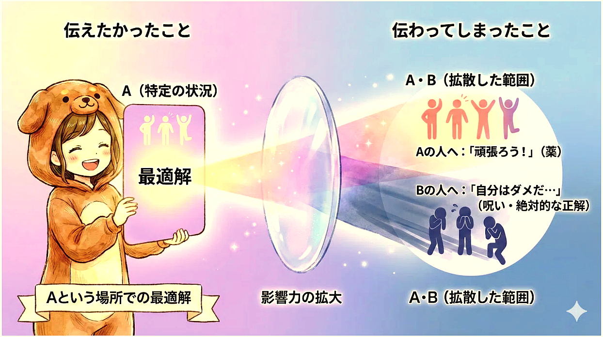
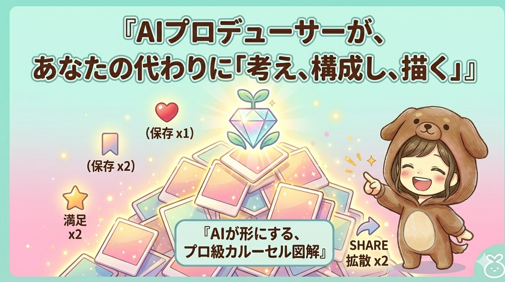

services
マガジンの３本柱
01
zukai — design
図解：伝わるための「設計」
難しいことも、バラバラな想いも。AIと図解の力で、誰にでも『伝わるカタチ』へと鮮やかに変換し、挑戦の土台を作ります。構造を見える化することで、読み手の理解がぐっと深まります。
01 — zukai

02 — sns

02
sns — carousel
発信：心を動かす「SNS」
SNSでパッと目に留まり、一瞬で伝わる。整えた図解を『伸びる』発信へと乗せて、あなたの想いを必要とする誰かへと繋いでいきます。スワイプが止まる、カルーセル設計を一緒に。
03
kindle — publishing
Kindle：価値を残す「出版」
日々の挑戦や、大切な物語。消えてしまいそうな『今』の記録を一冊の本にまとめ、あなたの資産として、永遠に形に残します。
表紙だけではなく、読者の満足度を高める
『本の中身の図解』を設計します。
内容が伝わる、読み続けてもらえる一冊へ。
『本の中身の図解』を設計します。
内容が伝わる、読み続けてもらえる一冊へ。
03 — kindle